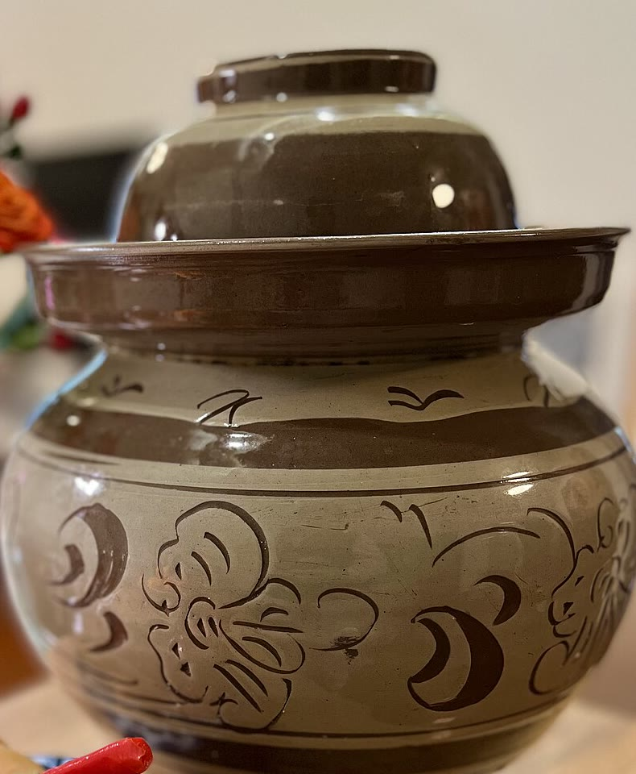

传统发酵技术的应用
本期导读
泡菜 · 果酒 · 果醋 · 腐乳

视频原话 · 导读3 句
- 同学们好！这节课梳理人教版选择性必修三第一章第一节——传统发酵技术的应用。8.2s
- 高考常考四种微生物的代谢类型、泡菜、果酒、果醋的制作条件，以及发酵装置和亚硝酸盐曲线。9.7s
- 我们按八个考点梳理，每个考点都讲清楚怎么考、怎么做。5.5s
传统发酵技术01#
发酵：利用微生物，在适宜条件下，将原料通过微生物的代谢转化为人类所需产物的过程
传统发酵技术：直接利用原材料中天然存在的微生物，或前一次发酵保存的面团、卤汁中的微生物
| 比较项目 | 传统发酵技术 | 发酵工程（第3节） |
|---|---|---|
| 发酵方式 | 固体、半固体发酵为主 | 液体发酵（发酵罐） |
| 生产规模 | 家庭式、作坊式 | 工业化、大规模 |
| 菌种 | 天然混合菌种 | 选育的优良单一菌种 |
| 产品品质 | 不够稳定 | 稳定 |
易错
传统发酵用的是天然的混合菌种，不是经过选育的单一菌种
视频原话5 句
- 考点一，发酵与传统发酵技术。发酵是人们利用微生物，在适宜条件下，把原料通过微生物的代谢转化为所需产物的过程。11.8s
- 传统发酵技术，是直接利用原材料中天然存在的微生物，或者前一次发酵保存下来的面团、卤汁中的微生物来发酵。10.8s
- 它的特点是：以固体发酵和半固体发酵为主，通常是家庭式或作坊式的。7.4s
- 参与发酵的往往是多种微生物，也就是混合菌种，所以产品品质不太稳定。7.4s
- 考法：和发酵工程比较。易错：传统发酵用的是天然混合菌种，不是经过选育的单一菌种。9.3s
腐乳与毛霉02#
酵母、曲霉、毛霉等多种微生物参与，主要是 毛霉
蛋白质
蛋白酶→
小分子的肽 + 氨基酸
脂肪
脂肪酶→
甘油 + 脂肪酸
毛霉：丝状真菌 · 真核生物 · 异养需氧型
| 菌种 | 类型 | 代谢类型 | 用于 |
|---|---|---|---|
| 毛霉 | 真核 | 异养需氧 | 腐乳 |
| 乳酸菌 | 原核 | 异养厌氧 | 泡菜 |
| 酵母菌 | 真核 | 异养兼性厌氧 | 果酒 |
| 醋酸菌 | 原核 | 异养需氧 | 果醋 |
解题方法
乳酸菌、醋酸菌是原核生物，酵母菌、毛霉是真核生物；只有乳酸菌严格厌氧，酵母菌兼性厌氧
视频原话5 句
- 考点二，腐乳、酱等传统发酵食品。腐乳的制作有酵母、曲霉和毛霉等多种微生物参与，其中起主要作用的是毛霉。11.5s
- 毛霉产生的蛋白酶，把豆腐中的蛋白质分解成小分子的肽和氨基酸。6.7s
- 脂肪酶把脂肪水解为甘油和脂肪酸，所以腐乳味道鲜美、易于消化。6.9s
- 毛霉是一种丝状真菌，属于真核生物，代谢类型是异养需氧型。6.5s
- 考法：四种常见菌种的比较。解题方法：记住一张表——乳酸菌、醋酸菌是原核生物，酵母菌、毛霉是真核生物；只有乳酸菌严格厌氧，酵母菌兼性厌氧。15.4s
泡菜的制作03#
菌种：乳酸菌（厌氧细菌） C6H12O6 → 2 C3H6O3（乳酸）+ 能量
盐水：质量百分比 5%～20%，煮沸、冷却待用
煮沸：杀灭杂菌、除去溶解氧；冷却：防止高温杀死乳酸菌
蔬菜装至八成满 → 盐水没过全部菜料 → 盖好坛盖
坛盖边沿水槽注满水：隔绝空气，保证坛内无氧
解题方法
泡菜的所有操作都围绕两件事：创造无氧环境、防止杂菌污染
视频原话5 句
- 考点三，泡菜的制作。菌种是乳酸菌，它是厌氧细菌，在无氧条件下把葡萄糖分解为乳酸。9.3s
- 第一步，配制质量百分比为 5%～20% 的盐水，并且煮沸、冷却待用。7.8s
- 煮沸是为了杀灭杂菌、除去水中的氧气；冷却是为了防止高温杀死乳酸菌。7.3s
- 蔬菜装至八成满，倒入盐水没过全部菜料，盖好坛盖，再向坛盖边沿的水槽中注满水。8.8s
- 考法：问各步操作的目的。解题方法：泡菜的所有操作都围绕两件事——创造无氧环境、防止杂菌污染。10.4s
亚硝酸盐曲线04#
乳酸菌：先增加，后期受乳酸抑制
乳酸：不断增加，后趋于稳定
亚硝酸盐：先增后减（初期杂菌还原硝酸盐）
亚硝酸盐可转变为亚硝胺（致癌）
亚硝酸盐含量降低后再食用
易错
亚硝酸盐最高时不是乳酸菌最多的时候；腌制时间过短的泡菜亚硝酸盐含量高，最不安全
视频原话5 句
- 考点四，泡菜发酵中三种物质的变化。发酵初期，乳酸菌迅速繁殖，数量先增加，后期乳酸积累、pH下降，增长受到抑制。12.8s
- 乳酸的含量随着发酵进行不断增加，后期趋于稳定。5.4s
- 亚硝酸盐的含量先增加后减少：初期一些杂菌把硝酸盐还原成亚硝酸盐，后来在酸性环境中杂菌被抑制，亚硝酸盐被分解。12.3s
- 亚硝酸盐在特定条件下会转变为亚硝胺，这是一种致癌物，所以泡菜要在亚硝酸盐含量降低后再食用。10.1s
- 考法：看图判断三条曲线和最佳食用时间。易错：亚硝酸盐含量最高时并不是乳酸菌最多的时候，泡菜腌制时间过短最不安全。13.1s
果酒的制作05#
酵母菌 · 兼性厌氧
有氧：大量繁殖
无氧：C6H12O6 → 2 C2H5OH + 2 CO2
无氧：C6H12O6 → 2 C2H5OH + 2 CO2
温度
18～30 ℃
冲洗
→
去枝梗
→
榨汁
→
装瓶
留约 1/3 空间
→
密封发酵
每隔 12 h 左右拧松瓶盖
先冲洗后去枝梗、不反复冲洗：保留葡萄皮上的野生酵母菌，减少杂菌污染
留 1/3 空间：酵母菌先有氧繁殖；防止产生的 CO2 使发酵液溢出
易错
排气是拧松瓶盖，不是打开瓶盖（打开会进入空气和杂菌）；先通气后密封：先繁殖、后产酒
视频原话6 句
- 考点五，果酒的制作。菌种是酵母菌，代谢类型是兼性厌氧：有氧时大量繁殖，无氧时进行酒精发酵。10.8s
- 温度控制在 18～30 ℃。3.2s
- 葡萄先冲洗、再去枝梗，而且不能反复冲洗，以免把葡萄皮上的野生酵母菌洗掉。7.8s
- 装瓶时要留大约1/3的空间：一是让酵母菌先有氧繁殖，二是防止产生的 CO2 使发酵液溢出。12.5s
- 发酵过程中，每隔 12 h 左右把瓶盖拧松一次，排出 CO2。6.5s
- 易错：是拧松瓶盖，不是打开瓶盖——打开会让空气和杂菌进入。考法：先通气后密封的原因。9.6s
果醋的制作06#
醋酸菌 · 好氧细菌
只有在氧气充足时才能进行旺盛的生命活动
温度
30～35 ℃
氧气、糖源都充足
糖
→
乙酸
缺少糖源（有氧）
乙醇
→
乙醛
→
乙酸
C2H5OH + O2 → CH3COOH + H2O
果酒 → 果醋的主要反应
易错
果酒变果醋要改两个条件：温度升到 30～35 ℃，并且通入无菌空气（醋酸菌好氧，短时缺氧也会受影响）
视频原话5 句
- 考点六，果醋的制作。菌种是醋酸菌，它是好氧细菌，只有在氧气充足时才能进行旺盛的生命活动。10.0s
- 最适生长温度是 30～35 ℃。3.9s
- 当氧气、糖源都充足时，醋酸菌把糖分解成乙酸。5.3s
- 当缺少糖源时，醋酸菌把乙醇变为乙醛，再把乙醛变为乙酸。6.1s
- 易错：果酒变果醋，要改两个条件——温度升到30～35 ℃，并且通入无菌空气。8.6s
发酵装置分析07#
| 比较项目 | 果酒 | 果醋 |
|---|---|---|
| 菌种 | 酵母菌 | 醋酸菌 |
| 温度 | 18～30 ℃ | 30～35 ℃ |
| 充气口 | 关闭 | 通入无菌空气 |
| 排气口 | 打开（排 CO2） | 打开 |
| 出料口 | 取样 | 取样 |
解题方法
先判断是果酒还是果醋：果酒关充气口，果醋开充气口；排气口两种发酵都要打开
视频原话5 句
- 考点七，果酒与果醋发酵装置。这个装置有三个口：充气口、排气口和出料口。8.5s
- 充气口用来通入空气：果酒发酵时关闭，果醋发酵时通入无菌空气。7.0s
- 排气口排出CO2，它连接一根长而弯曲的胶管，防止空气中的微生物污染。7.8s
- 出料口用来取样，便于检测发酵情况。3.9s
- 考法：给出装置图问各口的作用。解题方法：先看是果酒还是果醋——果酒关充气口，果醋开充气口，排气口两种发酵都要开。12.6s
发酵结果检测08#
果醋
测 pH：明显下降；闻气味：有酸味
菌种
取发酵液制片，显微镜观察菌体形态
易错
葡萄糖也能与酸性重铬酸钾反应变色，所以要适当延长发酵时间，耗尽葡萄糖后再检测酒精
视频原话4 句
- 考点八，发酵结果的检测。果酒：在酸性条件下，重铬酸钾与酒精反应，颜色由橙色变成灰绿色。10.4s
- 果醋：可以检测pH，发酵液pH明显下降；也可以闻气味，有酸味。7.4s
- 还可以取发酵液制片，用显微镜观察菌种的形态。5.1s
- 易错：葡萄糖也能与酸性重铬酸钾反应变色，所以要适当延长发酵时间，耗尽葡萄糖后再检测酒精。10.0s
易错速查✓
先自己判断，再点按钮查看对错与解析。
- 1传统发酵一般用单一菌种进行发酵说法错误：多为天然存在的混合菌种
- 2腐乳制作中起主要作用的是毛霉说法正确。
- 3泡菜盐水煮沸后要趁热倒入坛中说法错误：要冷却后再倒入，以免杀死乳酸菌
- 4果酒发酵中要每隔一段时间拧松瓶盖排气说法正确。
- 5果酒变果醋只需把温度升到30～35 ℃说法错误：还要通入无菌空气（醋酸菌好氧）
- 6酸性重铬酸钾变灰绿色，一定说明有酒精说法错误：葡萄糖也能使其变色，需耗尽葡萄糖
先认菌种，再定氧气和温度！
视频原话 · 易错速查5 句
- 最后，用六道判断题检验一下。3.6s
- 判断一：传统发酵一般用单一菌种？错，多为天然混合菌种。判断二：腐乳制作中起主要作用的是毛霉？对。12.4s
- 判断三：泡菜盐水煮沸后要趁热倒入？错，要冷却。判断四：果酒发酵要定期拧松瓶盖排气？对。11.9s
- 判断五：果酒变果醋只需升高温度？错，还要通入无菌空气。判断六：重铬酸钾变灰绿色一定有酒精？错，葡萄糖也能使它变色。14.0s
- 八个考点串成一条线：先认菌种，再定氧气和温度。我们下期再见！6.9s
图片来源
图片来源：Wikimedia Commons —— AngyHe《Sichuan Pao Cai and Pao Cai Jar》CC BY-SA 4.0（裁切）
Photo: AngyHe, CC BY-SA 4.0